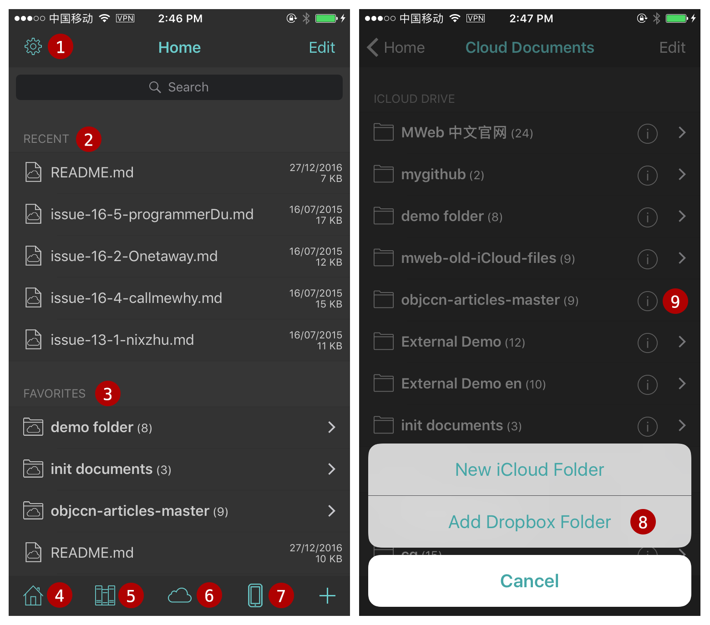
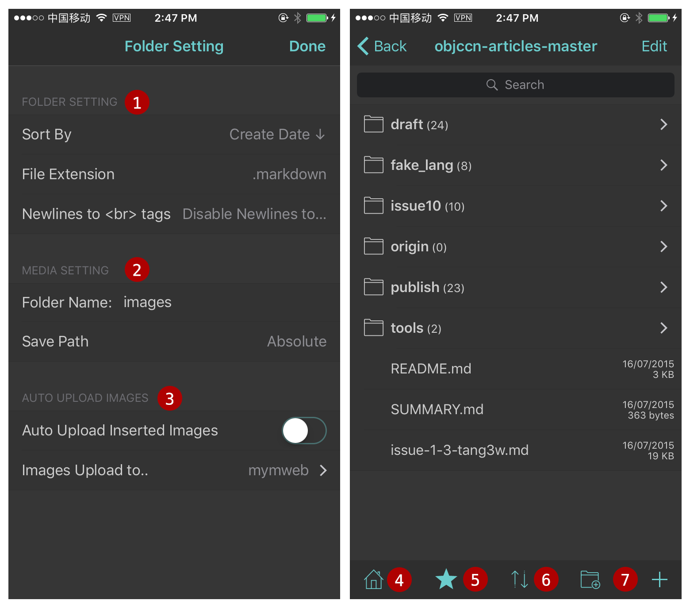
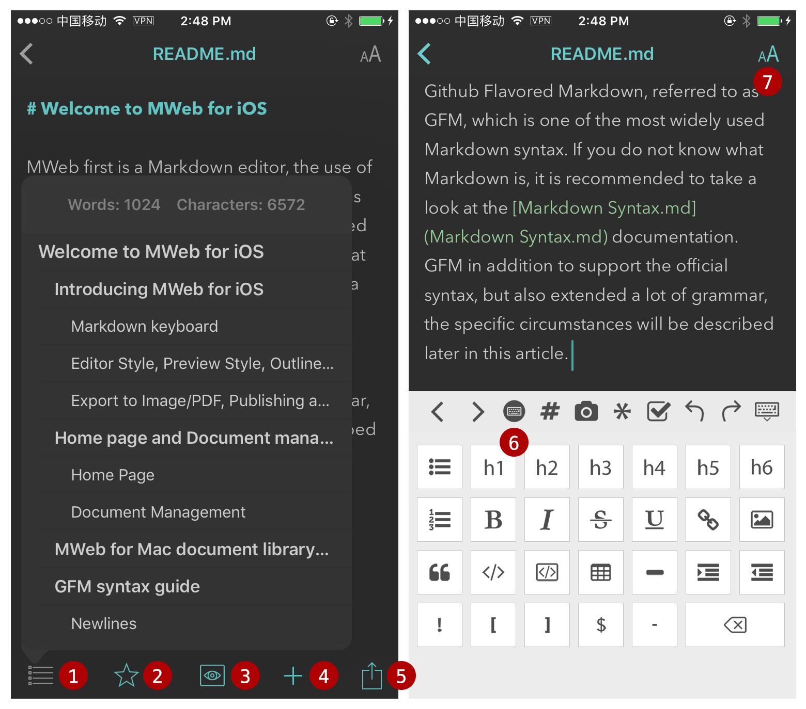
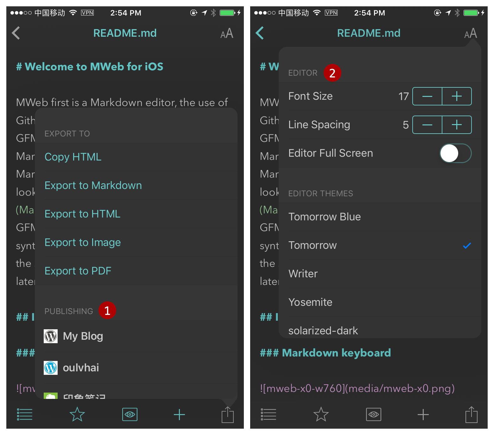
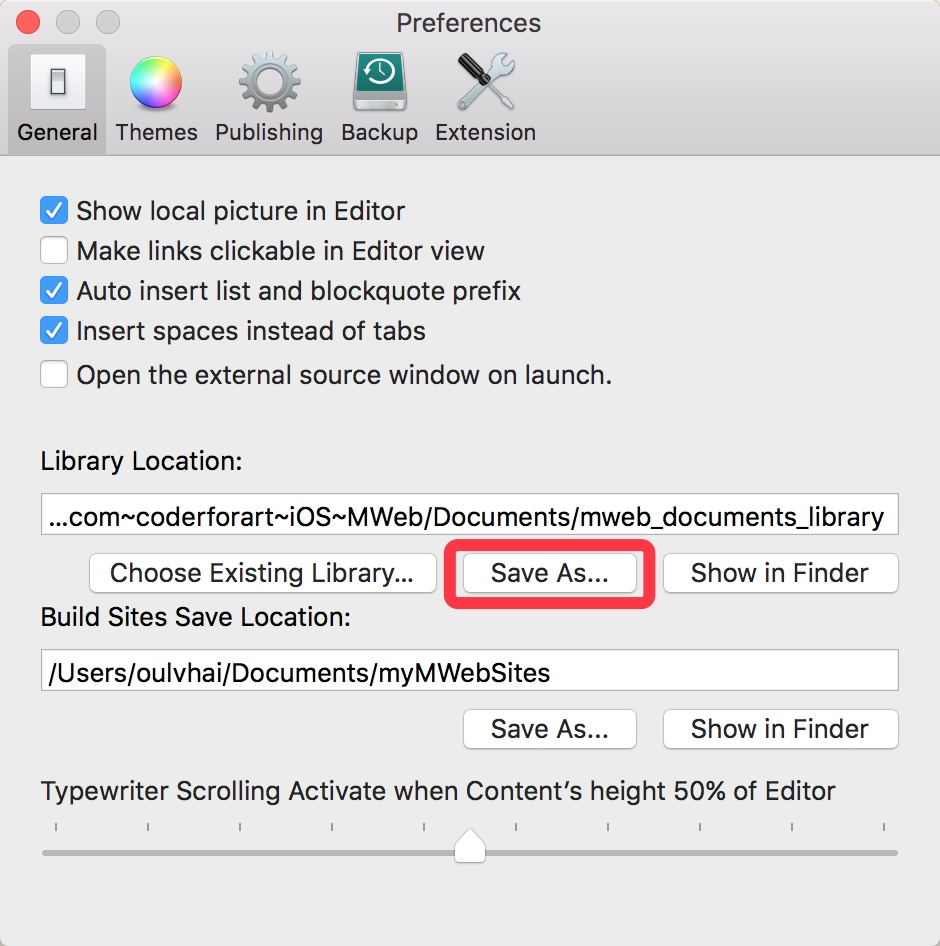
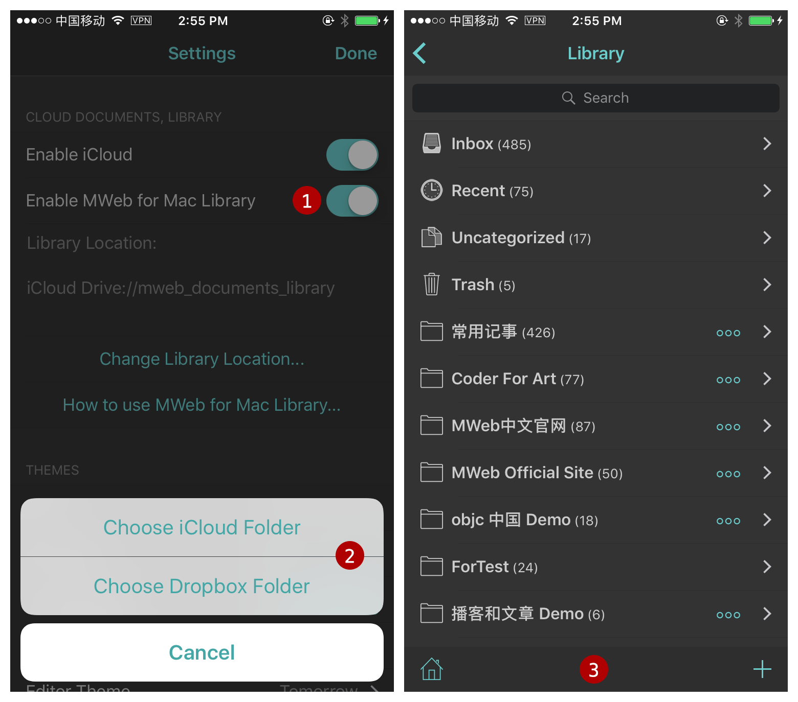

Introducing to MWeb for iOS
MWeb first is a Markdown editor, the use of Github Flavored Markdown, referred to as GFM, which is one of the most widely used Markdown syntax. If you do not know what Markdown is, it is recommended to take a look at the Markdown syntax guide full version. GFM in addition to support the official syntax, but also extended a lot of grammar, the specific circumstances will be described later in this article.
Introducing MWeb for iOS

The figure of left: Home, the figure of right: Cloud Documents
- Setting Page.
- Recent uses documents.
- Favorites documents and folders.
- Home.
- Library: to be use Library, you need a MWeb for Mac.
- Cloud Documents: you can add Dropbox folder to sync now!
- Local Documents.
- When you in Cloud Documents page, you can use right-bottom add folder button to add Dropbox folder to sync.
- Folder Setting button (i), when you tap, you can set the files sort, default document extension, image save position when you insert image, please see the below for detail.

The figure of left: Folder Setting, the figure of right: get into the folder
- Set the folder default sort, default extension for new document.
- Where to save to image when you insert. The default is save to the media folder in the document position, you can change it (the figure of left is change to "images"). The "Save Path" is set to "Relative" by default. for example: when the document "folder/sub/sub2/sub3/doc.md" insert a image, the image will save to "folder/sub/sub2/sub3/media". but when you set the "Save Path" to "Absolute", the image will save to "folder/media".
- Auto Upload Images. If you enable it, when you insert the image, the image will auto upload to the selected images upload service. You can to the Setting page to add the image upload service.
- Back to Home.
- Add to the Favorites.
- Change to sort.
- New folder or document.

The figure of left: document outline view, the figure of right: markdown keyboard.
- Document Outline.
- Add to the favorites.
- Preview the markdown document.
- New document.
- Export, Publish. Export to HTML, Image, PDF. Publish to Wordpress, Wordpress.com, Metaweblog API, Evernote, Blogger, Medium.
- Markdown keyboard.
- Change editor theme and preview style.

- Publish services. Publish to Wordpress, Wordpress.com, Metaweblog API, Evernote, Blogger, Medium. you can go to the Setting page to add the publish service.
- Change the style.
Config MWeb for Mac Library in MWeb for iOS
MWeb for iOS support link to MWeb for Mac Library. You can view, edit the MWeb for Mac Library and add new document to the Library. If you want to use this feature, please go to the MWeb for Mac Preferences - General - Library Location, use "Save as..." button to save to Library to iCloud Drive MWeb's folder or Dropbox. Please see the below:

If you want to save the Library to the iCloud Drive and not found the MWeb's folder in the iCloud Drive, you can try to go to iOS system settings - iCloud, close iCloud Drive and open again.
When you save the Library to the Cloud and finished to sync, you can config MWeb for Mac Library in MWeb for iOS, please see the below:

- Enable the MWeb for Mac Library.
- tap Change/Set Library Location, choose the Library location. Notice: the Library folder will has a "mainlib.db" file and a "docs" folder.
- When you finish, go back to the Home page and tap the "Library" button in the bottom, you will get into the Library.
Notice for use the Library in iOS: when you add new Library document, the document always in the "Inbox" and "Uncategorized".
Other references.
- Publish to self hosted wordpress and Metaweblog API guide
- How to use MWeb Images Upload services
- How to use Custom Local Images Upload service
- How to use MWeb for Mac Library in iOS
GFM syntax guide
Newlines
End a line with two or more spaces + enter.
Just typing enter to newline,please go to Settings and enable "Translate newlines to <br> tags" ( default is enable ).
Task lists
Example:
- [ ] task one not finish `- + SPACE + [ ]`
- [x] task two finished `- + SPACE + [x]`
Result:
- task one not finish
- + SPACE + [ ] - task two finished
- + SPACE + [x]
Image size and alignment (Only in MWeb)
Setting image width, align left, align right, align center syntax. For example: , -w450 mean set the image width: 450.  --> align left, width:500.  --> align right, width:500.  --> align center, width:500.
Multi-line code
Example:
```js
function fancyAlert(arg) {
if(arg) {
$.facebox({div:'#foo'})
}
}
```
Result:
function fancyAlert(arg) {
if(arg) {
$.facebox({div:'#foo'})
}
}
Tables
Example:
First Header | Second Header
------------ | -------------
Content from cell 1 | Content from cell 2
Content in the first column | Content in the second column
You can create tables by assembling a list of words and dividing them with hyphens - (for the first row), and then separating each column with a pipe |:
Result:
| First Header | Second Header |
|---|---|
| Content from cell 1 | Content from cell 2 |
| Content in the first column | Content in the second column |
Strikethrough
Example:
(like ~~this~~)
Result:
Any word wrapped with two tildes (like this) will appear crossed out.
LaTeX
Use double US dollors sign pair for Block level Math formula, and one US dollor sign pair for Inline Level.
For example this is a Block level $$x = {-b \pm \sqrt{b^2-4ac} \over 2a}$$ formula, and this is an inline Level $x = {-b \pm \sqrt{b^2-4ac} \over 2a}$ formula.
\\[ \frac{1}{\Bigl(\sqrt{\phi \sqrt{5}}-\phi\Bigr) e^{\frac25 \pi}} =
1+\frac{e^{-2\pi}} {1+\frac{e^{-4\pi}} {1+\frac{e^{-6\pi}}
{1+\frac{e^{-8\pi}} {1+\ldots} } } } \\]
Result:
For example this is a Block level \(x = {-b \pm \sqrt{b^2-4ac} \over 2a}\) formula, and this is an inline Level \(x = {-b \pm \sqrt{b^2-4ac} \over 2a}\) formula.
\[ \frac{1}{\Bigl(\sqrt{\phi \sqrt{5}}-\phi\Bigr) e^{\frac25 \pi}} =
1+\frac{e^{-2\pi}} {1+\frac{e^{-4\pi}} {1+\frac{e^{-6\pi}}
{1+\frac{e^{-8\pi}} {1+\ldots} } } } \]
Footnote
Example:
This is a footnote:[^sample_footnote]
Result:
This is a footnote:1
Comment And Read More..
TOC
Example:
[TOC]
Result:
-
footnote text detail... ↩